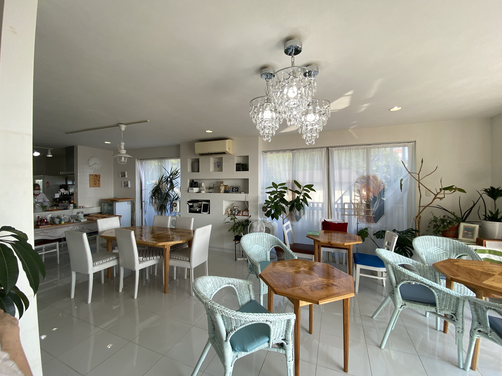
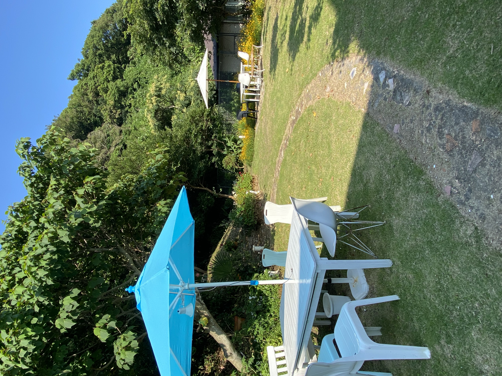
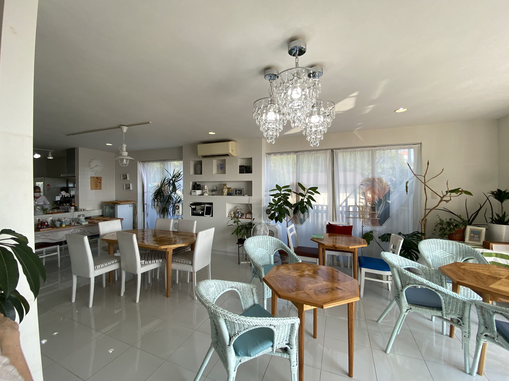
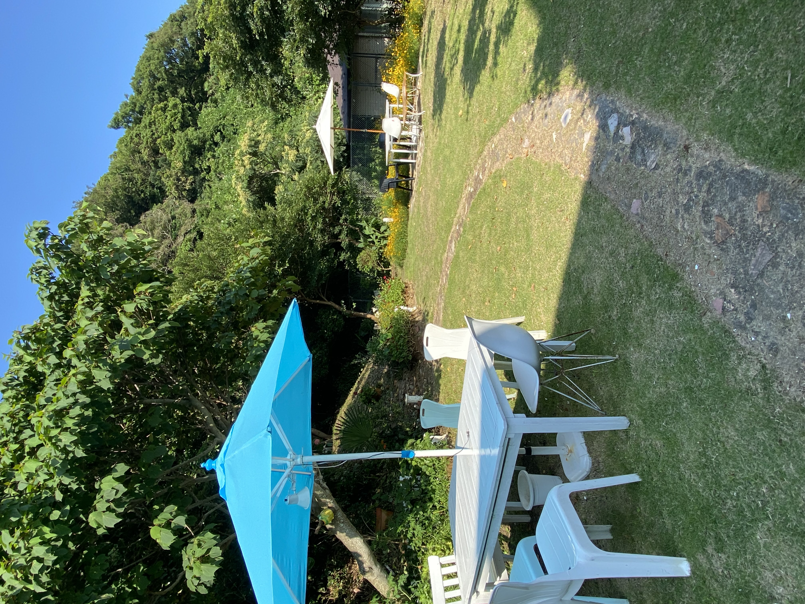

店内
店内も店主のこだわりが詰まっており、どこを切り取っても素敵な空間です。 テーブルもひとつひとつデザインが違い、とてもおしゃれです。
裏庭

裏庭のある場所は、トンネルの上！ 建物の横の細い道を通り、奥へと進んでいくと広がっています。

店内
店内も店主のこだわりが詰まっており、どこを切り取っても素敵な空間です。 テーブルもひとつひとつデザインが違い、とてもおしゃれです。
裏庭

裏庭のある場所は、トンネルの上！ 建物の横の細い道を通り、奥へと進んでいくと広がっています。
access
住所：神奈川県横須賀市秋谷1628-22
電話：090-4949-6266
営業時間：11:00〜日没
休日：月・火・水・木・金・冬季